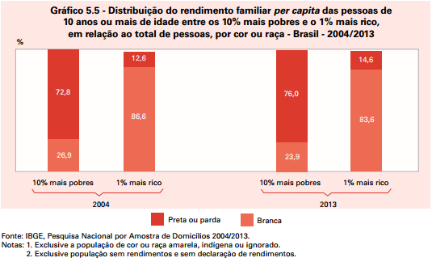
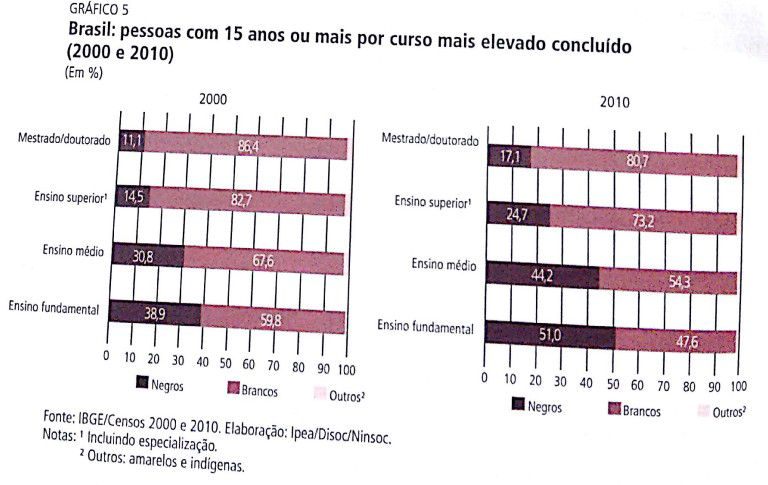
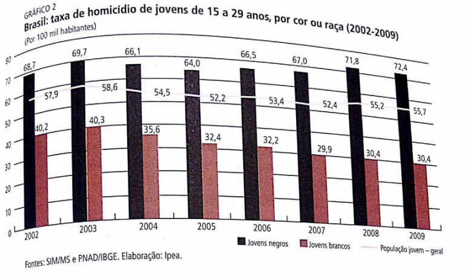

O preconceito contra a população negra ainda é muito forte no Brasil. Entenda o que é desigualdade racial e quais são seus sintomas e consequências na sociedade brasileira.
Apesar de sermos todos iguais perante a lei, há profundas desigualdades entre os membros da sociedade brasileira e uma delas é a desigualdade racial. A história do nosso povo foi construída tendo como um dos seus pilares o racismo e a cruel escravidão.
Com a abolição da escravatura, em 1888, a população negra foi integrada à sociedade de maneira marginalizada. O preconceito contra negros ainda se mantém no imaginário de parte dos brasileiros e diariamente vemos casos de racismo no Brasil.
Quando falamos de raça no Brasil, podemos estar nos referindo a negros, brancos ou indígenas. Porém, nesta aula vamos focar na condição de desigualdade racial que vive a população negra no Brasil.
O termo democracia racial foi utilizado pelo sociólogo Gilberto Freyre, no seu livro “Casa Grande e Senzala” (1933). O autor defende a ideia de que, ao contrário de outros países como África do Sul e Estados Unidos, haveria no Brasil uma convivência pacífica entre as raças.
Entretanto, a ideia de que no Brasil estaríamos mais próximos a uma democracia racial foi bastante questionada não apenas por intelectuais, mas também pelo movimento negro, que vive diariamente os casos de racismo.
Continue a sua revisão com o professor Raphael Carrieri, do canal do Curso Enem Gratuito, que mostra pra você as múltiplas origens da população brasileira.
A crítica à ideia de democracia racial argumenta que, apesar de o racismo não ser instituído legalmente como foi o sistema de apartheid sul-africano e a segregação norte-americana, no Brasil o preconceito racial é estrutural, isto é, está escondido nas relações sociais.
O apartheid foi um regime de segregação racial adotado de 1948 a 1994 pelos sucessivos governos do Partido Nacional na África do Sul, no qual os direitos da maioria dos habitantes foram cerceados pelo governo formado pela minoria branca.
A questão racial é uma forma de desigualdade histórica no Brasil, que se mantém presente hoje em dia. Se mais da metade da população é classificada como negra ou parda (52,9%), portanto, uma distribuição igualitária teria que contemplar o equilíbrio de renda entre as raças, certo? Entretanto, a realidade é bem diferente.
Segundo dados do IBGE de 2013, entre os 10% mais pobres da população brasileira, 75,0% são pretos ou pardos e apenas 23,9%, brancos. Já no outro extremo da distribuição, entre o 1% dos brasileiros mais ricos, apenas 14,6% eram pretos ou pardos, contra 83,6% de brancos.
No gráfico acima, podemos ver que entre a população mais pobre, a maioria é preta ou parda; enquanto entre a população mais rica, a maioria é branca
Os negros são os brasileiros com menos escolaridade em todos os níveis. Como podemos observar no gráfico a seguir, a participação da população negra diminui à medida que se avança na escolaridade. O único nível que vemos uma participação equilibrada de cada grupo racial é no ensino fundamental, devido à universalização alcançada nos últimos anos.
Porém, a participação do negro é baixíssima nas universidades. As políticas de ação afirmativa, tais como as cotas nas universidades, é uma conquista do movimento negro e têm como objetivo reduzir a desigualdade racial, assim como a universalização do ensino básico alcançou equilibrar a escolaridade entre os mais jovens.
Outros dados que expressam uma enorme desigualdade entre negros e brancos são os relacionados à violência. No Brasil, um jovem negro tem mais que o dobro de chance de ser assassinado que um jovem branco.
O gráfico abaixo mostra essa diferença da taxa de homicídio para a população jovem branca, que se mantém estável a partir de 2005, em torno de 30 jovens a cada 100 mil habitantes, comparada com a evolução da taxa para população jovem negra, que só vem aumentando e em 2009 chegou a 72,4.
Essa diferença reflete na diferença entre a expectativa de vida, bem menor entre os negros que entre os brancos. De acordo com o IPEA, em 2000, a expectativa das pessoas brancas chegava a 71,53 anos, enquanto a das pessoas negras era 66,15 anos.
A luta dos negros existe desde a época escravagista, quando os escravos fugiam e se organizavam em quilombos. Nesse período, também ganharam força os movimentos abolicionistas. Depois da abolição da escravatura, surgiram associações que se organizavam contra o preconceito e a desigualdade racial e social sofrida pelos negros.
O movimento negro ganhou novas influências na década de 1960, com a força do movimento dos direitos civis nos EUA e a luta africana contra o apartheid e libertação das colônias.
Após a redemocratização, a pressão do movimento negro provocou importantes avanços na legislação, como o estatuto da igualdade racial e as leis que tipifica o racismo como crime inafiançável, que institui do ensino de história da África e cultura afro-brasileira e que cria cotas nas universidades. Mas, ainda assim, o Brasil convive com a desigualdade racial.